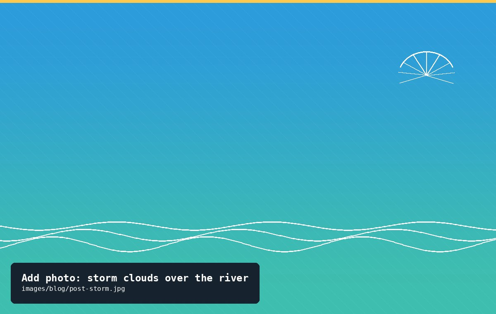
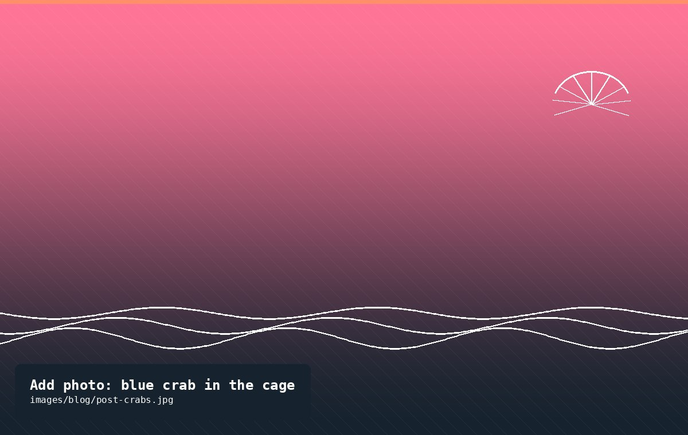
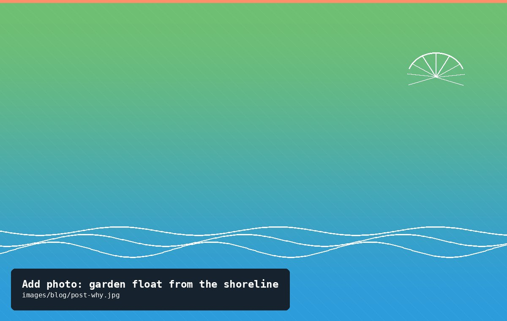

The longer stories behind the updates — storms, crabs, first winters, and the occasional oyster that makes it all worthwhile.

Aug 5, 2026·4 min readCohort 2026Water Quality
Salinity Swings After the July Storms
Three storm systems moved through the watershed in the space of ten days this July, and the river showed it. At our last check on Cohort 2026, salinity had dropped to 6 parts per thousand — well below the 9–11 ppt range we'd been seeing all summer.
Freshwater runoff is one of the more dramatic things you can watch happen to a tidal river. After a big rain event, the Potomac's salinity can swing hard for days as stormwater pushes down from upstream, temporarily turning brackish water nearly fresh near the surface. For oysters, which can tolerate a wide range of salinity but still have limits, a sharp dip is worth paying attention to — even if it isn't usually dangerous on its own.
What we watched for: shell gaping (a sign of stress), any unusual mortality between visits, and whether the cage needed to move to a different depth where salinity tends to hold steadier. None of that happened. Cohort 2026 lost 11 oysters since the May count, which is within the range we'd expect from routine attrition, not a die-off. Growth actually looked good — several oysters had visibly thickened shell edges, a sign of active feeding despite the murkier water.
Oysters are, notably, built for exactly this kind of instability. Estuary species evolve around variability, not despite it, and a Chesapeake oyster that couldn't handle a rainy July wouldn't last long here. Still, we're keeping a closer eye on the cage for the next few weeks, and if salinity stays low into August we may drop it a foot deeper, where the water tends to stay a bit more stable.
Cohort 2025 just made it through its first Potomac winter, including a stretch in mid-January when the shallows along our dock iced over for the better part of a week. Here's what changed, what we worried about, and what actually happened.
Oysters slow down dramatically once water temperatures drop below the mid-40s (°F). They stop feeding, seal their shells nearly shut, and effectively wait out the cold — which is good news, because there isn't much a gardener can do to speed up a Chesapeake winter. Our main job was making sure the cage stayed submerged and wasn't at risk of being crushed or lifted by shifting ice.
We dropped the cage a foot lower than its summer position in early December, mostly to keep it below the layer where surface ice tends to form and shift with the tide. That turned out to be the right call — when the shallows iced over in January, the cage and the oysters inside were undisturbed a foot below the ice line.
We didn't do a full measurement update over the winter, since handling dormant oysters in near-freezing water adds stress for very little data. Our next full check-in, once the water climbs back into the 50s, will be the real test of how the cohort came through. Anecdotally, though, a quick visual check in late January showed shells closed tight and no obvious mortality — a good sign heading into spring.
One change for next winter: we're planning to add a second float line as backup, after watching how much the main line iced up and stiffened during the cold snap.

Oct 3, 2025·3 min readCrittersCohort 2025
Blue Crabs Pay a Visit
During the September update on Cohort 2025, we found something we hadn't seen before: a full-grown blue crab, wedged into a gap where two cage panels meet, sitting happily among 452 oysters that presumably did not appreciate the company.
Blue crabs are opportunistic predators, and a cage full of young oysters is exactly the kind of easy meal they're built to find. Ours had clearly been in there a while — it wasn't a fresh intrusion, based on how settled in it looked, and there were a few shell fragments nearby that suggest it had already had a snack or two before we caught up with it.
The bigger issue wasn't really the crab itself; it was how it got in. Our cage panels are zip-tied together along the seams, and one seam had loosened enough over the summer, likely from months of current and handling, to leave a gap just wide enough for a determined crab to pry open further and squeeze through.
We evicted the crab (unharmed, back into the river) and added a second zip-tie at every seam on the cage as a fix. It's a small thing, but it's the kind of lesson that only shows up after a season of real conditions — no amount of planning replaces watching what actually happens to a cage over a summer.
Measurements from that visit are on the Cohort 2025 page, crab cameo included.

May 10, 2025·4 min readAbout the Project
Why We Garden Oysters on the Potomac
This site exists to track something pretty small in scope — a few cages of oysters off one dock — that's part of something much bigger: the slow, ongoing effort to bring native oyster reefs back to the Chesapeake Bay watershed.
Oyster reefs in the Bay are a fraction of their historic extent, reduced over more than a century by overharvesting, disease, and habitat loss. Rebuilding them matters for reasons beyond the oysters themselves. A single adult oyster filters somewhere around 50 gallons of water a day, and healthy reefs create structure that shelters fish, crabs, and countless smaller species that have nowhere else to go once the reef is gone.
Oyster gardening is one small, very hands-on piece of that restoration effort. Through the Tidewater Oyster Gardeners Association (TOGA), volunteers like us take in young spat each spring, raise them in protected cages off docks and piers, and hand them back each fall to be planted on sanctuary reefs, where harvesting isn't allowed and the goal is simply for the reef to grow. Raising oysters this way, in a protected cage instead of directly on a reef, dramatically improves their odds of surviving to adulthood, since the biggest threats to young oysters are the predators and competitors that a garden cage keeps mostly at bay.
We started this particular garden in 2025, with a single cohort of 500 spat and more questions than answers. This site is where we're keeping the record — the measurements, the photos, and the occasional surprise (see: blue crabs) — partly so we remember what happened, and partly because we think it's worth sharing what a small, ordinary restoration project actually looks like, month to month.
If you'd like to support this kind of work directly, TOGA accepts donations that fund spat, cages, and reef plantings across the watershed — details on the Donate page.